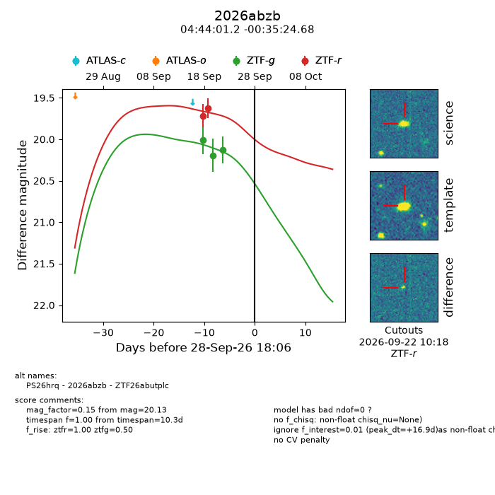
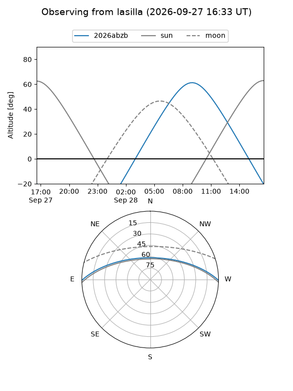
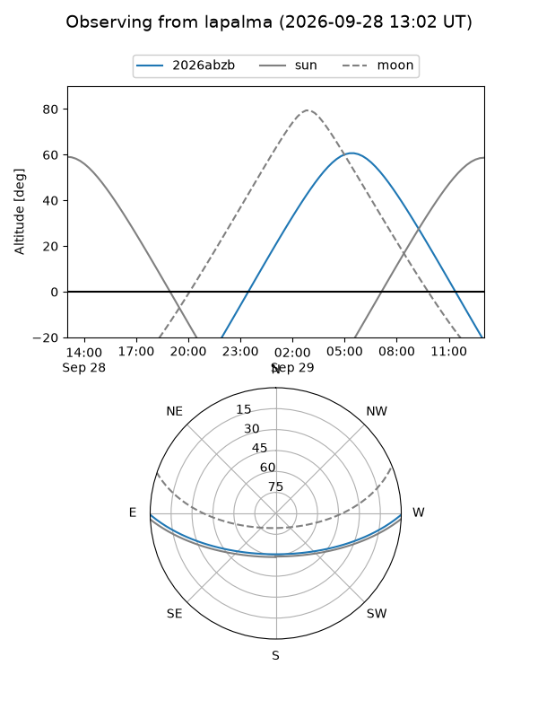
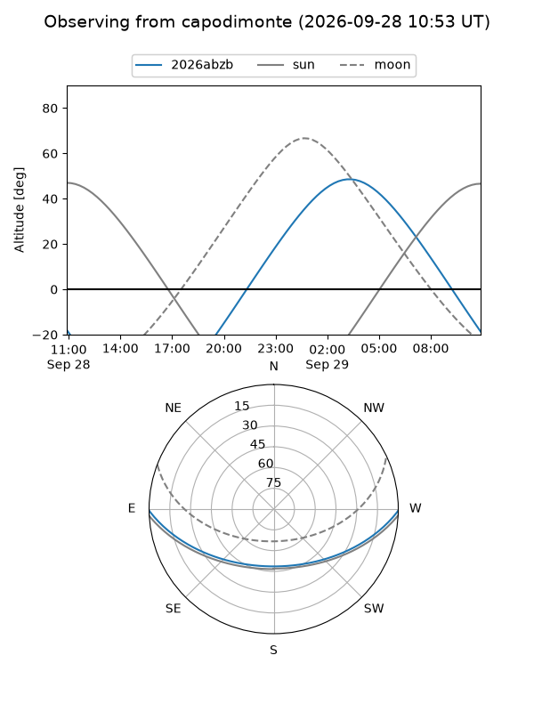
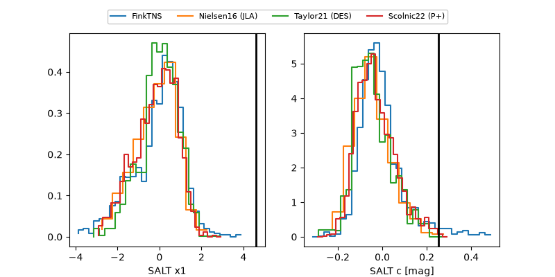

2026abzb
Target 2026abzb at 2026-09-28 18:08
Aliases and brokers:
FINK-ZTF: ztf.fink-portal.org/ZTF26abutplc
Lasair-ZTF: lasair-ztf.lsst.ac.uk/objects/ZTF26abutplc
ALeRCE-ZTF: alerce.online/object/ZTF26abutplc
YSE-PZ: ziggy.ucolick.org/yse/transient_detail/2026abzb
TNS name: wis-tns.org/object/2026abzb
Direct TNS query: direct search
alt names
ZTF26abutplc (ztf,fink_ztf)
2026abzb (tns,yse)
PS26hrq (panstarrs)
Coordinates:
equatorial (ra, dec) = 71.0050,-0.59019
equatorial (HMS+DMS) = 04:44:01.20,-00:35:24.68
galactic (l, b) = (197.6874,-28.31868)
Flags:
TNS type: nan
peak dt: +16.9
Photometry:
last ztfg=20.13, ztfr=19.63
3 ztfg, 2 ztfr detections
Lightcurve

Visibility



Additional plots
